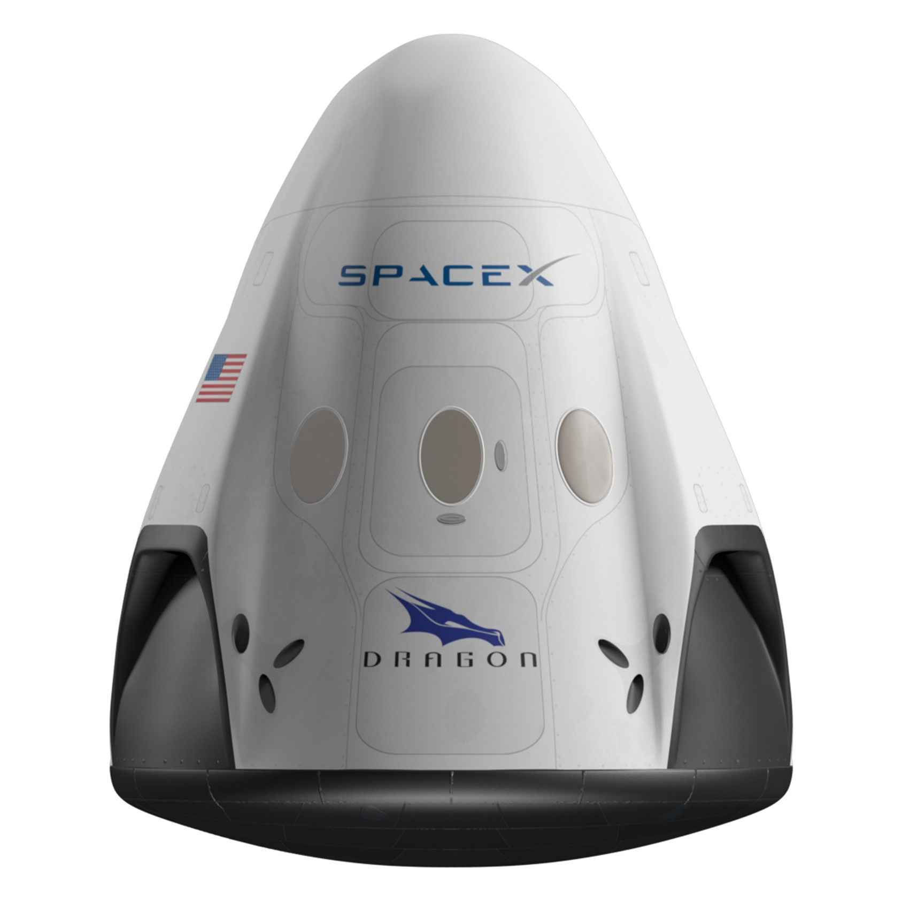

Hyperblog
Tu blog de cabecera.
Este es el titulo atractivo e interesante del post
Y este es el párrafo de inicio donde vamos a explicar las cosas increíbles que se pueden hacer con ramas.
Los blogs son la mejor forma de compartir información y tus ideas. Mucho mas que ir a conferencias o salir en Youtube. Excepto si eres un rockstar. Pero estadisticamente no lo eres.... por ahora.
Suscribete y dale Like

Platzi